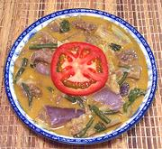
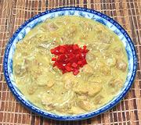
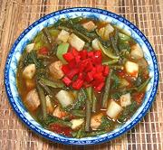
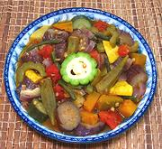
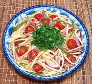
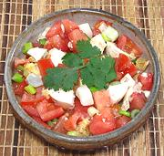
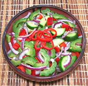
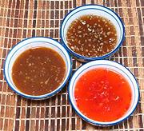
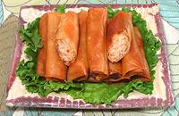
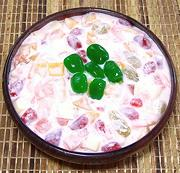

|

Beef Kare-Kare |

Chicken Coconut Adobo |

Pork Sinigang |
|

Pinakbet Vegetable Stew [v] |

Green Mango Salad [v] |

Tomato w/Salt Eggs [ov] |
|

Amaplaya Cuke Salad [v] |

Dips for Lumpia [v] |

Lumpia Shanghai |
|

Fruit Salad (dessert) [ov] |